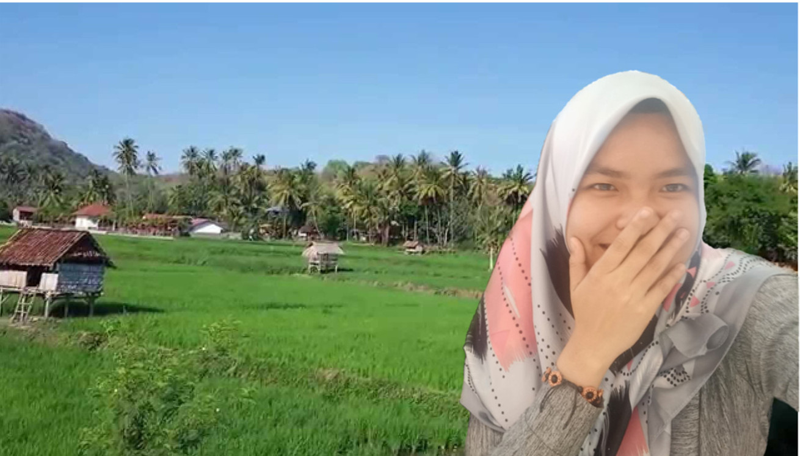
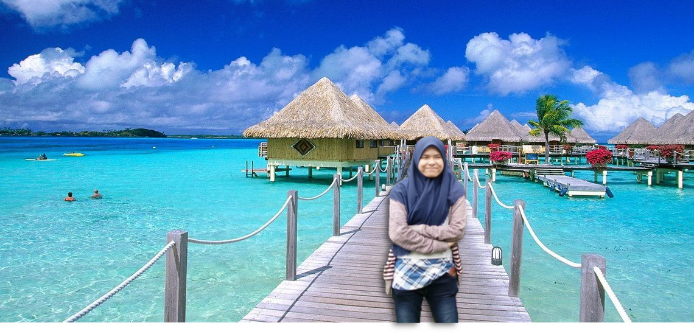
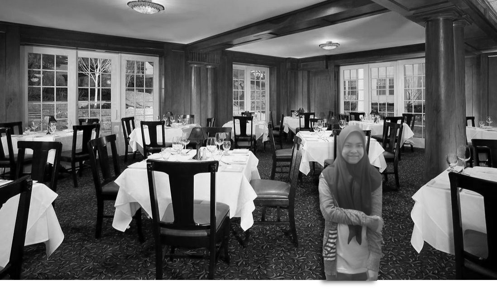
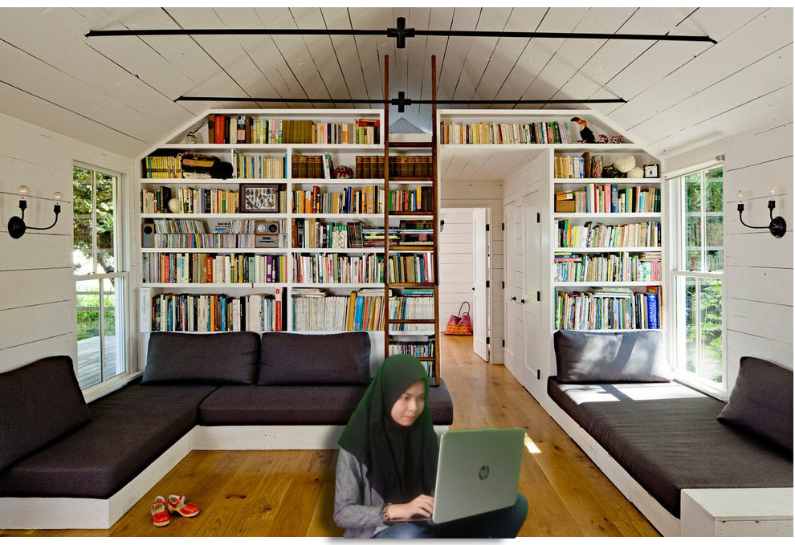
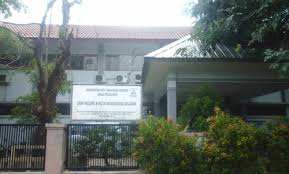
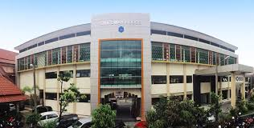
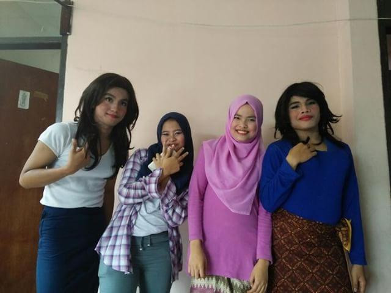
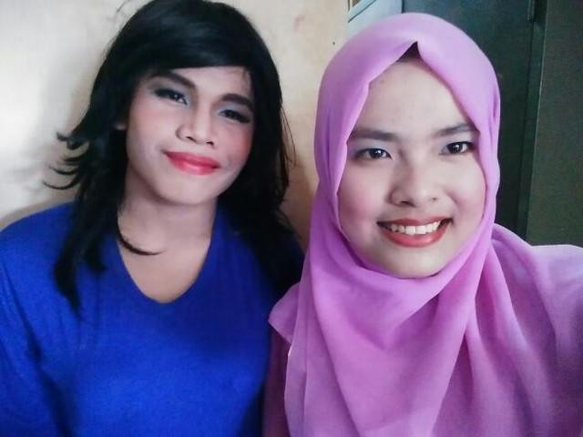

| Nama: | Sindy Safitri |
| Tempat, tanggal lahir: | Tangerang, 3 Februari 2001 |
| Alamat Kost: | Jalan Ciheuleut rt 06, rw 08 no 2, Baranangsiang, Bogor Timur |
| Saudara Kandung: | Anak ke 1 dari 2 bersaudara |
| Email: | sindysafitri@smakbo.sch.id |
| Agama: | Islam |
Hobi :
-Membaca
Saya sangat suka membaca, tapi saya tidak suka membaca buku pelajaran. Saya lebih suka baca buku seperti novel, sejarah, fiksi dan lain-lain. Dan saya suka baca cerita di e-book wattpad. Membaca membuat mood saya naik turun. Saya suka terbawa suasana seperti kalau cerita yang saya baca sedang menyebalkan, terkadang akan membuat mood saya turun dan jadi suka marah-marah sendiri hanya karena abis membaca.
-Jalan-jalan

Saya termasuk orang yang tidak bisa diam. Apalagi sedang libur dan hanya di rumah saja tidak kemana-mana dan tidak ada aktivitas yang menyenangkan. Saya lebih suka jalan-jalan keluar yang bisa membuat saya tidak bosan lagi. Saya lebih suka jalan-jalan ke tempat wisata alam dibanding ke mall atau taman bermain yang sangat mudah membuat bosan.
-Makan

Saya sangat suka makan. Meskipun makan saya tidak banyak, tapi saya sering makan, kalau tidak ditahan, sehari bisa 5 kali makan. Tetapi saya termasuk orang yang pilih-pilih makanan. Tapi, jika saya sudah suka dengan suatu makanan, akan saya makan terus tanpa bosan meskipun sudah dimakan setiap hari. Saya sangat senang apabila orang tua saya mengajak saya makan di luar rumah meskipun tidak bisa nambah (bukannya tidak bisa nambah, tapi malu kalau nambah) namun saya suka apabila lauk di tempat makan itu enak.
-Tidur
Sebenarnya tidur itu disebut sebagai kebutuhan, bukan hobi. Tapi saya suka sekali tidur. Teman-teman saya menyebut saya pelor (nempel molor). Bahkan saat hari libur, saya bangun hanya untuk solat, mandi dan makan lalu tidur lagi dan bangun saat makan siang.
-Mengerjakan tugas

Sebenarnya ini adalah kewajiban. Tapi saking banyaknya tugas, mengerjakan tugas bisa menjadi hobi. Apalagi tugas kelompok seperti makalah atau presentasi, itu adalah santapan saya setiap ada tugas kelompok. Karena saya jarang mendapatkan kelompok yang mau bekerja semua. Hampir semua kelompok saya hanya mengandalkan saya. Jadi tidak heran kan kalau mengerjakan tugas adalah hobi saya?
Cita-cita :
-Menjadi orang baik
-Menjadi orang yang bermanfaat bagi orang lain tapi ga mau dimanfaatin orang lain
-Menjadi orang yang ga lemot lagi
-Bisa membiayakan orang tua naik haji
-Membahagiakan orang tua
1. SD Negeri Serpong 2 (2007-2013)
2. SMP Negeri 8 Tangerang Selatan (2013-2016)

3. SMK SMAK Bogor (2016-sekarang(2018))

Nama saya Sindy Safitri biasa dipanggil 'Sindy', 'Sin' atau 'indy'. Lahir di Tangerang, 3 Februari 2001. Sekarang (2018) memasuki usia 17 tahun. Saya tinggal di Tangerang Selatan, namun sekarang saya tinggal di salah satu kostan di Ciheuleut karena sekarang saya bersekolah di SMK-SMAK Bogor. Sebenarnya saya tidak ingin sekolah di SMAKBO, namun orang tua saya menginginkan saya sekolah di SMAKBO. Orang tua saya menyarankan saya masuk SMAKBO karena kakaknya teman saya ada yang sekolah di SMAKBO. Awal-awal saya di SMAKBO saya merasa berat karena saya jauh dari orang tua dan saya tidak memiliki teman. Namun, semenjak saya punya teman saya jadi menikmatinya meski sekolah di SMAKBO itu melelahkan.
Awal kelas 10, saya mengikuti ekstrakurikuler teater. Pertama kali saya masuk ekskul teater, saya tidak ada teman, namun lama kelamaan saya merasa nyaman di ekskul teater. Lalu sekitar bulan Oktober 2016 akan ada acara wisuda angkatan 58 dan teater akan tampil di acara wisuda tersebut dan saya menjadi salah satu pemeran dari cerita yang akan dipentaskan. Meskipun lelah latihan setiap hari hingga malam, namun seru karena saya bersama teman-teman satu ekskul saya menikmatinya. Yang paling seru itu saat sudah H-1 tampil teater, saya bersama anak teater yang lain latihan dari pagi sampai malam hari jam 10 malam. Meskipun lelah, tapi seru karena kebersamaan sangat dirasakan saat itu. Saat sudah tiba harinya tampil, saya deg-degan karena ramai yang menonton, Gedung Serba Guna sampai penuh. Selesai tampil, kata kakak yang mengajar teater, penampilan kami bagus, saya jadi senang mendengarnya.
Berikut foto-foto sesaat sebelum tampil teater:

